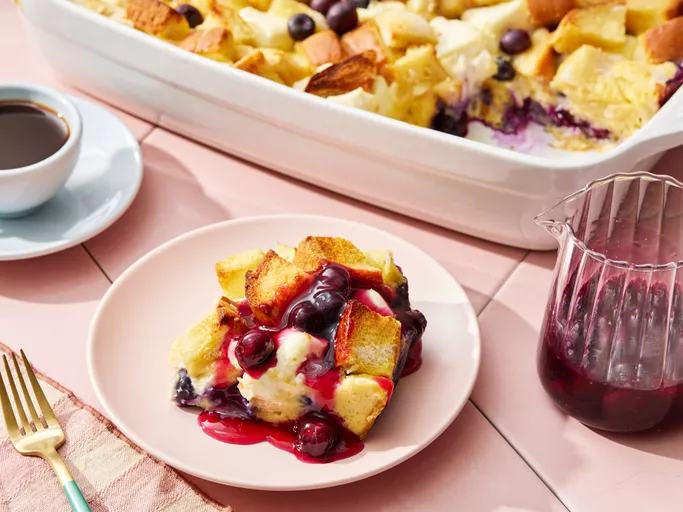

Overnight Blueberry French Toast
Home

Description:
This blueberry French toast casserole is made the night before and baked in the morning for a very delicious holiday breakfast or brunch. It's bursting with fresh blueberries, and covered with a rich blueberry sauce to make it one-of-a-kind!
Ingredients
Original recipe (1X) yields 10 servings
- 12 slices day-old bread, cut into 1-inch cubes
- 2 (8 ounce) packages cream cheese, cut into 1-inch cubes
- 1 cup fresh blueberries
- 12 large eggs, beaten
- 2 cups milk
- 1 teaspoon vanilla extract
- ⅓ cup maple syrup
Blueberry sauce
- 1 cup white sugar
- 1 cup water
- 2 tablespoons cornstarch
- 1 cup fresh blueberries
- 1 tablespoon butter
Steps
Step 1
- Gather all ingredients.
Step 2
- Prepare casserole: Lightly grease a 9x13-inch baking dish. Arrange 1/2 of the bread cubes in the dish and top with cream cheese cubes.
Step 3
- Sprinkle blueberries over the cream cheese, then top with remaining bread cubes.
Step 4
- Whisk eggs, milk, vanilla extract, and syrup together in a large bowl until well-combined; pour over the bread cubes. Cover and refrigerate overnight.
Step 5
- Remove casserole from the refrigerator about 30 minutes before baking. Preheat the oven to 350 degrees F (175 degrees C).
Step 6
- Bake casserole in the preheated oven, covered, for 30 minutes. Uncover, and continue baking until center is firm and surface is lightly browned, about 25 to 30 minutes.
Step 7
- Meanwhile, prepare blueberry sauce: Mix sugar, water, and cornstarch together in a medium saucepan; bring to a boil and cook, stirring constantly, 3 to 4 minutes. Stir in blueberries, reduce heat to low, and simmer until all the blueberries burst, about 10 minutes. Stir in butter.
Step 8
- Serve portions of casserole on plates and pour warm syrup over top.
Nutrition Facts
485
Calories
25g
Fat
52g
Carbs
15g
Protein
Return back to the top or click Here to return home for more amazing recipes!